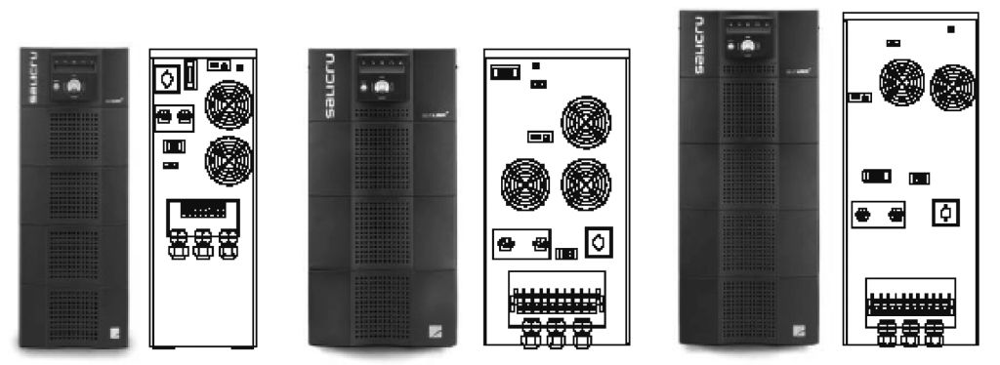
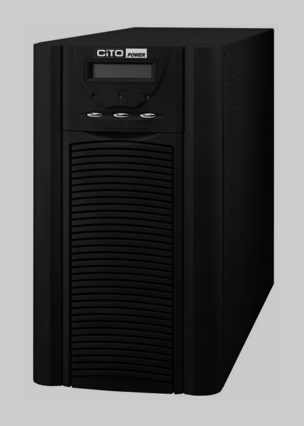

Sistema d'alimentació ininterrompuda (SAI)
Els equips informàtics necessiten energia elèctrica per a funcionar. La situació idònia és aquella en què la companyia elèctrica ens ofereix corrent altern a 230 V que oscil·la a 50 Hz; però no sempre és així. Un ordinador pot tolerar lleugeres diferències respecte als seus requeriments d’alimentació, però una diferència important fa que la font d’alimentació falli. I això pot causar tota una sèrie de problemes de funcionament al nostre equip.
Un SAI és un dispositiu amb un maquinari i programari propis que, connectat entre el nostre sistema i la xarxa elèctrica, ens evitarà alguns problemes quan l’alimentació falli:
- Els processos en funcionament no s’aturaran.
- Els usuaris del nostre sistema no veuran interrompudes les seves tasques.
- El maquinari no patirà.
- No es perdran dades a causa d’una aturada inesperada del sistema.
Característiques bàsiques
Un sistema d’alimentació ininterrompuda (SAI) ens protegeix dels problemes elèctrics més habituals en la xarxa:
- Soroll en la línia.
- Pujades de tensió i crestes de tensió, quan el voltatge de la línia és més alt del que hauria de ser.
- Baixades de tensió, quan el voltatge de la línia és inferior al que hauria de ser.
- Interrupció elèctrica total, quan no hi ha senyal elèctric (tall de corrent).
- Diferències de freqüència, quan les freqüències del senyal són diferents dels 50 Hz esperats.
Voltatge i freqüència del senyal elèctric
El voltatge en la xarxa elèctrica catalana és de 230 V, i la freqüència del senyal és de 50 Hz. Però, a d’altres països, el senyal elèctric pot tenir unes característiques de voltatge i freqüència diferents. Per exemple, als Estats Units, el senyal elèctric és generalment de 120 V a 60 Hz.
Davant aquests problemes, el SAI adapta el senyal elèctric que rep al que espera el nostre equip. És a dir, el SAI compensa les baixades de tensió, retalla les crestes, atenua el soroll i manté durant un cert temps el subministrament elèctric en cas d’un tall del senyal. De fet, cada problema deriva en una solució electrònica diferent, i els SAI més complexos les acostumen a incloure totes.
Supressors de crestes
Els supressors de crestes actuen bàsicament com un fusible entre la línia elèctrica i els equips que volem protegir; per a això, eliminen les crestes de corrent i les pujades de tensió. El que no fan, però, és mantenir l’alimentació quan es pateix una baixada de tensió o un tall elèctric.
Quan es produeix una cresta de tensió (voltatge) o de corrent, el supressor de crestes, situat entre la línia elèctrica i el nostre equip, elimina la cresta i manté estable el nivell de voltatge i d’intensitat del senyal que ens arriba.
Es tracta d’un nivell bàsic de protecció que hauria d’incloure, mínimament, qualsevol aparell electrònic car. Fixeu-vos que aquesta protecció s’aplica a d’altres camps, a més de l’alimentació elèctrica. Per exemple, es poden trobar supressors de crestes per a línies de telèfon, connexions RS-232 (sèrie) i connexions paral·leles. Fixeu-vos, també, que cal protegir tots els dispositius connectats a l’ordinador. Si posem un supressor de crestes a l’ordinador, però no a la impressora, llavors un pic de corrent a la impressora podria derivar cap a l’ordinador.
Un aspecte important dels supressors de crestes és que s’han de substituir si absorbeixen una cresta gran. Llevat dels fusibles, la majoria de supressors es basen en components anomenats varistors. La seva tecnologia es basa en la utilització de metall-òxid (MOV), dissenyat per a l’absorció de crestes i que es degrada quan en rep una. El problema dels supressors barats és que no avisen quan el varistor ha quedat “fregit”, de manera que el sistema pot acabar sense protecció, i nosaltres, amb un fals sentiment de seguretat. Per això, els millors supressors disposen d’indicadors que ens mostren en tot moment el seu estat de funcionament.
Els supressors són dispositius relativament econòmics.
Adaptadors de línia
Els adaptadors de línia tenen dues funcions bàsiques: protegir dels talls de corrent de durada molt curta, de mil·lisegons (microtalls), i filtrar el soroll elèctric que ens arriba amb les línies de corrent altern (xarxa elèctrica), que poden degradar la font d’alimentació i fer que falli prematurament.
En la figura, veiem com hauria de ser, idealment, el senyal d’entrada (ona sinusoïdal) i com pot arribar a ser en realitat (amb microtalls o soroll).
Principalment, es fan servir amb dispositius electrònics de precisió, com equips d’electromedicina, equipaments de laboratori o servidors crítics, que requereixen que el senyal elèctric sigui fiable per a reduir al màxim la possibilitat d’una pèrdua de dades.
En eliminar microtalls i sorolls en la línia, els adaptadors de línia asseguren un senyal elèctric molt estable. Per això són idonis per a equipament crític, com a servidors i per a aparells d’electromedicina.
La instal·lació és molt senzilla: només cal connectar-los a la presa de corrent i connectar l’equip que volem protegir a un dels connectors de sortida de l’adaptador.
A l’hora de triar l’adaptador adequat a les nostres necessitats, hem de tenir en compte el següent:
- Valor de potència que necessita el nostre equipament per a treballar.
- Voltatge d’entrada (voltatge de la línia elèctrica).
- Voltatge de sortida (voltatge que necessita el nostre equip).
Un altre criteri serà el nombre de dispositius que volem protegir. Alguns adaptadors de línia porten molts endolls que permeten connectar més d’un dispositiu -de baixa potència-, com ara l’ordinador, la impressora, etc.
En general, la majoria dels adaptadors de línia que trobem en el mercat també inclouen un supressor de crestes de tensió.
A més, hi ha d’altres funcions que ens poden resultar interessants; per exemple, alguns adaptadors converteixen la freqüència del senyal de 50 Hz a 60 Hz.
Sistemes d'alimentació ininterrompuda
Els sistemes d’alimentació ininterrompuda permeten que l’equipament continuï treballant quan es produeix un tall en el senyal elèctric.
SAI, UPS
Alguns del models de SAI que hi ha en l’actualitat en el mercat porten les sigles UPS (uninterruptible power supplies). UPS és SAI en anglès.
Per això, cal que instal·lem el sistema d’alimentació ininterrompuda (SAI) entre la línia elèctrica i el nostre equip. En cas que hi hagués un tall en el subministrament elèctric de la xarxa, el SAI s’encarregaria de l’alimentació (senyal elèctric) que requereix el nostre equip per a continuar treballant i evitar la pèrdua de dades i altres desperfectes.
Un SAI funciona com una font d’alimentació alternativa que s’activa en el moment en què hi ha un tall de corrent, i alimenta de manera ininterrompuda l’equipament. El temps que pot proporcionar alimentació és limitat, però suficient per a tancar l’ordinador amb seguretat.
Els SAI consten d’una bateria interna de gran capacitat i d’un sistema anomenat ondulador, que transforma el senyal de corrent continu generat per la bateria en corrent altern de 220 V i 50 Hz que requereixen els nostres equips.
En l’apartat “Dimensionament i càlcul dels SAI”, veureu com es calcula aproximadament aquest temps de funcionament autònom.
Cada SAI, en funció de les seves característiques i dels dispositius que té connectats, podrà subministrar alimentació al nostre equip durant un temps determinat.
Tipus de SAI
En el mercat trobem dos tipus de SAI: els SAI en línia o online i els SAI fora de línia o offline.
Un SAI fora de línia alimenta l’equipament que du connectat fent-hi arribar directament el senyal de la xarxa elèctrica. En el moment en què detecta un problema, molt ràpidament (en menys de cinc mil·lisegons) passa a alimentar l’equipament amb el senyal elèctric que ell mateix produeix.
Per contra, un SAI en línia sempre alimenta l’equipament connectat amb el senyal elèctric generat per la bateria interna i, mentrestant, recarrega contínuament aquesta bateria amb el senyal que li arriba de la xarxa elèctrica. Això permet que no hi hagi temps de transferència entre les fonts del senyal elèctric, i fa que el senyal que ofereix el SAI sigui molt estable.
Els SAI fora de línia són més barats i, per això, són els més emprats per usuaris particulars o petites empreses. Els SAI en línia són més cars, però com que ens asseguren un senyal elèctric molt estable, s’usen amb equipaments en què l’estabilitat del senyal pot ser un factor crític, com servidors, equipaments d’electromedicina, equipaments d’entitats bancàries, etc.
SAI fora de línia
Un circuit SAI fora de línia és el circuit en què veiem com el corrent elèctric flueix per la línia contínua, directament del senyal de la xarxa elèctrica; i, en cas d’alguna interrupció en el subministrament de corrent, la bateria i l’ondulador s’activen per a generar senyal elèctric.
- 
- Alguns models de SAI fora de línia
En aquests tipus de SAI, el senyal elèctric arriba directament des de la xarxa elèctrica. Com es mostra en la figura, en el moment en què hi ha alguna interrupció en el subministrament elèctric, la bateria i l’ondulador s’activen per a continuar subministrant el senyal elèctric.
Durant els moments (mil·lisegons) en què es fa el canvi entre el senyal elèctric provinent de la xarxa elèctrica i el senyal provinent de la bateria, es produeix una alteració en el senyal que el SAI subministra. Aquest és el desavantatge més gran d’aquests tipus de SAI. Per això, com més petit és aquest temps (anomenat temps de transferència), de més qualitat es considera el SAI.
SPS - SAI fora de línia
De vegades, trobarem que els SAI fora de línia també se’ls anomena SPS (standby power supply, sistema d’alimentació autònoma). Això és perquè es considera que un SAI fora de línia no és un veritable SAI; ja que, en tenir un temps de transferència curt, l’alimentació que dóna no és completament ininterrompuda.
Els SAI fora de línia proporcionen alimentació amb el senyal de la xarxa elèctrica, i quan hi ha un tall de corrent proporcionen alimentació amb les seves bateries internes. Això provoca una petita alteració del senyal de sortida en el moment del canvi. El temps de durada d’aquesta alteració s’anomena temps de transferència.
Un SAI típic té un temps de transferència d’uns 4 ms (mil·lisegons). Tenint en compte que la majoria d’ordinadors toleren temps de transferència d’uns 100 ms, semblaria que amb un SAI d’aquest tipus ja ens podem quedar tranquils. Però no és exactament així: encara que el nostre ordinador continuï funcionant, les alteracions en els senyals durant el temps de transferència poden provocar danys en els circuits i, per tant, com més els minimitzem, millor. Per això, a l’hora de triar un SAI, haurem de tenir en compte com a factor important el temps de transferència.
SAI line interactive
Són SAI que incorporen més funcionalitats que un SAI fora de línia, com la supressió de crestes, el filtratge de sorolls i la compensació de voltatge. A més, tenen una resposta més ràpida als talls de corrent. Per tot això, es consideren superiors als SAI fora de línia, però encara no tan bons com els SAI en línia, ja que continuen tenint un cert temps de transferència.
Altres característiques a tenir en compte són les funcionalitats addicionals que ens ofereixi el SAI. Molts SAI incorporen, per exemple, condicionadors de línia o supressors de crestes. Tot el que ens pugui assegurar una estabilitat i qualitat millors del senyal serà un valor afegit del nostre SAI.
SAI en línia
Un SAI en línia subministra sempre el senyal elèctric de les seves bateries i, amb això, aconsegueix no tenir temps de transferència i donar un senyal sense alteracions de manera continuada.
Circuit SAI en línia
Veiem com el corrent elèctric flueix per la línia contínua i subministra sempre el senyal elèctric de les seves bateries. En cas d’una cresta en el senyal d’entrada, passarà pel camí alternatiu (línia discontínua).
Com podem veure en la figura, l’alimentació que dóna el SAI prové de les bateries. Com que les bateries donen corrent continu, cal un ondulador per a convertir aquest senyal en corrent altern. També veiem com les bateries es carreguen constantment amb el senyal elèctric de la xarxa. En cas d’una cresta en el senyal d’entrada, aquest seguirà un camí alternatiu (camí puntejat), i passarà per un supressor de crestes i un filtre. Així evitarà danys al SAI.
- 
- Exemple de SAI en línia
Els SAI en línia donen un senyal elèctric fiable sense alteracions en el moment en què hi ha un tall de corrent. El senyal que donen sempre prové de les seves bateries, que es recarreguen contínuament.
Els SAI en línia, però, també tenen alguns desavantatges: com que el seu disseny és més complex, són més cars i, per a donar permanentment senyal de la seva bateria i transformar-lo amb l’ondulador, aquests dispositius han de consumir més energia, i generen més calor.
Dimensionament i càlcul dels SAI
Típicament, un SAI té un valor VA (volt amperes) que indica el màxim nombre de volts × amperes que pot subministrar. El valor VA no és el mateix que la potència (en watts) que lliura el SAI. Això seria així si la càrrega fos només resistiva, o el circuit fos de corrent continu i no de corrent altern. Els ordinadors no són solament resistius.
Si la demanda de VA és superior a la que pot donar el SAI (valor nominal VA), aquest podria deixar de funcionar. Per això, a la pràctica, el millor és que els dispositius que connectem al SAI no li demanin més del 75% del seu valor de VA nominal.
Per a calcular el valor de VA del SAI que necessitem, haurem de seguir els passos següents:
1) Obtenir els detalls de consum de l’equipament que hem de connectar. Aquests detalls solen aparèixer en una placa o etiqueta a la part posterior dels dispositius. Quan els valors que apareguin siguin voltatge i corrent, cal multiplicar-los tots dos per a obtenir el valor VA. Per exemple: 230 volts a 1,5 amperes = 230 × 1,5 = 345 VA. Si el que apareix són els watts, cal dividir aquest valor per 0,7. Per exemple: 80 watts = 80 / 0,7 = 114,3 VA.
Consum de VA
A l’hora de calcular el consum de VA d’un dispositiu, hem de triar els valors de voltatge i corrent indicats en l’etiqueta d’entrada (input) del nostre dispositiu. En alguns casos, aquestes dades les trobem en l’etiqueta del transformador amb què connectem el nostre equipament a la xarxa elèctrica.
En cas que es mostri un rang o diversos valors de volts possibles, agafarem el que correspongui al subministrament de la nostra xarxa elèctrica: per exemple, si apareix 100 - 240 V, agafarem 230 V.
En cas que mostri més d’un valor d’amperes possible, agafarem el més gran: per exemple, si apareix 1,5 A i 0,8 A triarem 1,5 A.
Voltatge i corrent
Són característiques del senyal elèctric que necessita el nostre dispositiu per a funcionar. Apareixen indicats amb un nombre i la lletra V en el cas de voltatge −per exemple, 230 V−, i amb un nombre i la lletra A en el cas dels amperes −per exemple, 1,5 A.
2) Un cop determinats els VA requerits per cada dispositiu a connectar, cal sumar tots aquests valors. Per exemple, sin tenim un ordinador a 100 VA, una pantalla amb 50 VA i un gravador de DVD extern a 100 VA, el càcul total de VA serà 100 + 50 + 100 = 250 VA. També hem de tenir en compte si és possible que, en el futur, hi connectem algun dispositiu addicional. Si és així, cal afegir els VA de consum del futur dispositiu. Amb la suma total obtenim les necessitats en VA de tot el nostre equipament.
3) Hem de triar un SAI que ens doni un valor VA superior als VA que requereix el nostre equipament. Es recomana tenir sempre un marge de seguretat, i que els VA requerits no representin més d’un 75% del que ens pot oferir el SAI. Per exemple, si els requeriments del nostre equipament són de 250 VA, es podria instal·lar un SAI que oferís almenys 250 / 0,75 = 333 VA. D’aquesta manera, 250 seria el 75% del que ens pot arribar a donar el SAI.
Consum de les impressores làser
Normalment, les impressores làser no necessiten un SAI (sempre es podrà reenviar un document a imprimir si aquest s’ha perdut).
En cas que ho necessitessin, hem de tenir en compte que els valors de voltatge i intensitat (amperes) que apareixen en l’etiqueta posterior de la impressora es refereixen al consum en funcionament. Però, en el moment d’engegar, el consum de la impressora s’incrementarà considerablement.
Per exemple, si els valors que apareixen en l’etiqueta (valors en funcionament) són de 230 V i 2 A (per tant, requereix 460 VA), podria ser que en el moment d’escalfament aquests requeriments s’incrementessin fins a 4 A (920 VA). En aquest cas, caldria calcular els VA del SAI tenint en compte que la impressora pot arribar a demanar el valor màxim de VA, és a dir, 920 VA.
Val a dir que, si comprem un SAI sobredimensionat (amb més VA dels que necessita el nostre equipament), podria semblar que llencem els diners. Però aixó no és així perquè un SAI sobredimensionat ens dóna un temps més gran d’alimentació autònoma en cas de tall de corrent.
Sobredimendionant el SAI aconseguim que, en cas d’aturada del senyal elèctric de la xarxa, pugui subministrar senyal elèctric durant més temps.
Exemple de càlcul
Per exemple, si el nostre equipament requereix 1.000 VA i comprem un SAI de 3.100 VA que té un temps d’alimentació autònoma de vint minuts, com que hem connectat equips amb menys consum, el temps d’alimentació autònoma pot arribar a ser de noranta-tres minuts.
El càlcul del temps extra es pot fer aproximadament a partir de les indicacions següents:
1) Dividim el valor VA del SAI entre el valor VA de consum total dels dispositius connectats al SAI. Per exemple, si els dispositius consumeixen 375 VA i el SAI és de 1.100 VA:
1.100 VA / 375 VA = 2,9333
Seguint la taula, obteniu el factor multiplicador.
| Valor mínim del quocient | Valor màxim del quocient | Factor multiplicador |
|---|---|---|
| 0 | 1,3 | El SAI no és prou sobredimensionat per a donar un temps extra. |
| 1,3 | 3 | 1,3 |
| 3 | en endavant | 1,5 |
Seguint el nostre exemple, el factor multiplicador per a 2,9333 és d’1,3.
2) El temps de funcionament autònom ampliat serà igual al temps d’alimentació autònoma nominal del SAI pel quocient de consum pel factor multiplicador. Seguint el nostre exemple, si el temps d’alimentació autònoma és de deu minuts, el temps d’alimentació autònoma ampliat serà: 10 × 2,9333 × 1,3 = 38,129 minuts.
Ampliació del temps d'alimentació autònoma
Si volem un temps d’alimentació autònoma (sense connexió en xarxa elèctrica) més gran, hem de triar un SAI més gran (amb capacitat de subministrar més VA) o bé connectar menys equips al SAI.
Per a triar un SAI, cal tenir en compte els problemes més habituals en la xarxa elèctrica. A vegades els talls de corrent no duren més de cinc minuts, però n’hi ha molts. En aquest cas, es pot triar un SAI amb valor VA proper (lleugerament superior) al VA que requereix el nostre equipament. En altres casos, els talls es produeixen molt rarament, però poden durar més de mitja hora. En aquests casos, interessa triar un SAI que tingui un valor VA molt superior als requeriments en VA del nostre equipament, perquè així pugui donar alimentació durant més temps.
No considereu que els requeriments de VA d’un equip (impressora, monitor, ordinador) són proporcionals a la seva potència de càlcul. A vegades, els equipaments antics consumeixen més potència (VA) que els dispositius nous. De fet, generalment, a causa de les millores tecnològiques en l’estalvi energètic, com més potent és un ordinador actual, menys consumeix respecte als de generacions anteriors.
Connexió de dispositius al SAI
A la part posterior del SAI hi ha tots els connectors. Podem trobar fins a tres tipus de connexions diferents: connexions elèctriques, connexions per a xarxa i connexions per a consola (de control). Les podeu identificar en la figura.
Els SAI tenen connectors elèctrics per a connectar els dispositius que alimenta, connectors de xarxa per a connectar les línies telefòniques o de xarxa que volem protegir i connectors sèrie (o USB) per a connectar localment un ordinador de control com a consola del SAI.
Les connexions elèctriques connecten el SAI a la xarxa elèctrica (connector d’entrada) i a l’equipament al qual dóna alimentació (connectors de sortida). El nombre de connectors de sortida limita el nombre de dispositius que podrem connectar al nostre SAI. Normalment, els SAI més econòmics (barats) porten menys connectors de sortida que els SAI de gamma alta (els més cars).
Hi ha alguns dispositius d’entrada/sortida, com ara impressores o escàners, que no necessiten una protecció d’alimentació ininterrompuda. Si endolléssim aquest tipus de perifèrics al SAI estaríem reduint el temps d’alimentació en cas de tall de corrent per als dispositius crítics.
Com que aquests dispositius necessiten protecció de sorolls de línia i de crestes de tensió, hauríem d’instal·lar el seu propi supressor de crestes. Per a solucionar això, molts SAI tenen connectors de derivació. Aquests connectors donen un senyal filtrat i condicionat, però no alimentat per la bateria en cas de tall de corrent.
Els models de SAI més complets també porten protecció de filtratge de soroll i supressió de crestes per a les línies de xarxa (Ethernet) i per a la línia del mòdem (línia telefònica).
Crestes de voltatge en línies telefòniques i de xarxa
Qualsevol cable de coure és susceptible de transmetre una cresta de voltatge (com les provocades per un llamp). És per això que, a part de la protecció als cables d’alimentació, també cal tenir en compte els cables telefònics o de xarxa que arriben als nostres equips. Aquests cables són especialment susceptibles a aquest tipus d’alteracions perquè tenen tiratges molt llargs a l’exterior dels edificis.
Si no estigués protegit, una cresta de voltatge podria arribar per la línia telefònica fins a casa i malmetre el mòdem o dispositiu de comunicacions (encaminador o router), i possiblement la placa mare o d’altres components. Per això, si disposem d’un mòdem o dispositiu de comunicacions, cal protegir-lo d’alteracions del voltatge de la línia.
Les connexions de control permeten connectar el nostre ordinador al SAI per a programar-ne el funcionament i per a supervisar-ne l’estat. Solen ser connectors en sèrie o USB, encara que en alguns casos també podem trobar una connexió de xarxa, que ens permetrà configurar i controlar el SAI remotament.
Control i automatització del SAI
Els SAI, depenent del model, ofereixen un programari més o menys complex que ens permet gestionar-ne i controlar-ne el funcionament. Quan volem supervisar els paràmetres (nivell de tensió, temperatura, estat de la bateria, etc.) que ens indiquen si el SAI funciona correctament, estem accedint en mode de control.
També podem programar el funcionament del SAI en cas d’un tall de corrent. En aquest cas estarem accedint en mode d’automatització.
El SAI disposa d’utilitats de programari per a controlar el seu estat de funcionament i programar el tancament automatitzat en cas de tall de corrent. Aquestes utilitats es poden fer servir des d’un ordinador connectat al SAI mitjançat el port en sèrie.
Tant si volem accedir per a fer tasques de control, com si volem accedir per a fer tasques d’automatització, hem de connectar el SAI al nostre ordinador mitjançat un cable que vagi d’algun dels connectors de control del SAI (port en sèrie, port USB) fins al port corresponent de l’ordinador. I executarem, en el nostre ordinador, alguna de les utilitats (programari) que ens permet comunicar-nos amb el SAI i enviar-hi ordres.
En cas que ens connectem al SAI mitjançat una xarxa, tant el SAI com el nostre ordinador han d’estar connectats correctament a la xarxa i configurats de tal manera que es puguin “veure”.
La majoria de SAI vénen amb el seu propi programari. Si a la caixa del SAI no hi ha un CD amb el programari, consulteu la pàgina web del fabricant per veure si el programari del vostre model hi és disponible. A vegades, fins i tot és recomanable, encara que tingueu el CD, que baixeu el programa del web. D’aquesta manera, us assegureu que teniu la darrera versió.
A banda del programari del fabricant, tant les distribucions Linux com les darreres versions del Windows porten una sèrie d’utilitats per a configurar el SAI.
Podeu accedir al Windows per mitjà del tauler de control, a Opcions d’energia.
En el Linux hi ha algunes aplicacions (per exemple, Network UPS Tools, NUT) que s’instal·len com un servei (amb un dimoni) i permeten connectar-se amb molts models de SAI que hi ha en el mercat i controlar-ne i programar-ne el funcionament.
Programari per al SAI
Hi ha una gran varietat d’aplicacions per al control del SAI. D’una banda, trobem el programari ofert per cada fabricant que ens sol arribar juntament amb el SAI. D’altra banda, hi ha aplicacions genèriques que permeten controlar i automatitzar diferents models de SAI. Totes aquestes aplicacions ofereixen unes funcionalitats més o menys similars que són les següents:
Es recomana que es faci servir APCUPSD per a gestionar SAI de la marca APC, i NUT per a gestionar qualsevol altre model de SAI.
- Tancament automàtic de l’equipament durant talls de corrent llargs
- Supervisió de l’estat del subministrament d’energia
- Visualització del consum de voltatge i corrent per part de l’equipament connectat
- Rearrencada de l’equip després d’un tall de corrent de llarga durada
- Visualització del voltatge actual en la línia
- Emissió d’alarmes en certes condicions d’error
- Protecció contra curtcircuits
Automatització del sistema
Si volem automatitzar el funcionament del SAI haurem d’activar la funcionalitat d’aturada automàtica. Aquesta permet al SAI indicar al sistema operatiu de l’ordinador que s’aturi i apagui la màquina.
Automatitzar el SAI vol dir definir quines tasques ha de fer en cas d’un tall de corrent. Normalment, consistiran a indicar a l’ordinador connectat que tanqui el sistema operatiu i que aturi la màquina.
Per a configurar la funcionalitat d’aturada, hem de fer servir el programari d’automatització que hàgim triat per gestionar el nostre SAI.
Sense l’aturada automàtica configurada, en algunes circumstàncies, el SAI no tindria cap utilitat. Per exemple, si tinguéssim un ordinador funcionant sense cap supervisió (ni funcionalitat d’autotancament) i hi hagués un tall de corrent, el SAI li subministraria el que li cal per a funcionar. Però, després d’algun temps, l’energia de les bateries del SAI s’esgotaria i el SAI s’aturaria, la qual cosa provocaria que l’ordinador s’aturés de manera abrupta.
Un SAI amb la funcionalitat d’aturada automàtica detectarà el tall de corrent i, quan tan sols li quedi un 20% d’energia a les bateries, enviarà un senyal al sistema operatiu perquè aturi el sistema i, després, l’ordinador. A continuació, s’aturarà ell mateix.
Engegada automàtica
A vegades, haurem de configurar el nostre SAI perquè, quan s’engegui, l’ordinador també s’engegui automàticament. Aquesta no sol ser la configuració per defecte. Generalment, amb la configuració de fàbrica, després d’encendre el SAI haurem d’encendre explícitament l’ordinador perquè arrenqui.
En el menú de configuració (setup) trobareu una opció que indica arrencada automàtica (instant power on, en anglès). Normalment, en el menú de boot (arrencada) o de power management setup (gestió energètica), hi ha un apartat que indica què cal fer després d’un tall de corrent. Aquest apartat es pot dir Restore on AC/power loss o State after power failure, (el nom concret depèn de la versió del BIOS). De les tres opcions que solen aparèixer, Last state, Power on i Power off, trieu Power on. Així indiqueu que, en tornar el corrent (power), cal engegar la màquina (on). Activeu-la, deseu la configuració, i sortiu del menú d’autoconfiguració per tornar a engegar la màquina.
Entrada al menú Setup - Autoconfiguració
Per a entrar en el menú de Setup (configuració), cal prémer una tecla durant el procés d’arrencada. Esteu atents als missatges que apareixen per pantalla en engegar la màquina. Surt un missatge similar a aquest: Press DEL to enter SETUP, que us indica la tecla que cal prémer (en aquest cas, la tecla Del) per a entrar en el menú d’autoconfiguració.
Això ho podeu provar de la manera següent: atureu el vostre ordinador, apagueu el SAI, enceneu un altre cop el SAI i, si l’ordinador no s’engega automàticament, és que cal configurar-lo perquè ho faci per si mateix.
Per a configurar l’arrencament automàtic, engegeu l’ordinador i entreu en el setup.
Alguns BIOS no tenen aquesta funcionalitat; en aquest cas, l’única solució, una mica dràstica, però, seria canviar la placa mare de l’ordinador.
Manteniment del SAI
La majoria de SAI porten uns indicadors lluminosos a la part frontal, i són capaços d’emetre algunes alarmes sonores que ens avisen de l’estat de funcionament. És fonamental saber interpretar aquesta informació per a mantenir el SAI en correcte funcionament.
Alarma de sobrecàrrega
A vegades, un SAI pot acumular massa càrrega i emetre, per a avisar-nos, una alarma sonora. Per a solucionar-ho hem de desconnectar el SAI del corrent un moment; en fer això, el SAI pot eliminar la càrrega en excés (alimentant els nostres dispositius) i l’alarma s’atura.
Els indicadors canvien a cada màquina, i normalment trobarem una explicació detallada en la documentació del SAI. Com podem veure en la figura, en alguns models, els podem identificar pel símbol gràfic associat. En d’altres, trobarem una indicació textual.
Alguns dels indicadors que trobareu són els següents:
En un SAI hi ha diferents indicadors. Quan una funció es posa en funcionament, s’encén el LED corresponent.
- Online. LED (indicador lluminós) que indica que el SAI està engegat i funcionant amb l’energia de la xarxa elèctrica.
- On battery. LED que indica que el SAI està engegat i funcionant amb l’energia de les seves bateries.
- Overload. LED que s’encén si connectem al SAI més dispositius dels que és capaç d’alimentar.
- Site wiring fault. LED que indica si hi ha algun problema amb el senyal elèctric que hi arriba. Acostuma a ser a la part posterior del SAI.
- Replace battery. Indica que cal canviar la bateria.
- Low battery. Indica bateria baixa.
- Battery status. Mostra el nivell de càrrega de la bateria.
Els senyals sonors (alarmes) ens avisen de situacions crítiques en què pot fer falta alguna actuació de l’administrador, el qual és bo que n’estigui assabentat. Per exemple, molts SAI emeten una alarma quan està canviant de funcionament normal a subministrar energia de la seva bateria. La descripció detallada de les alarmes i del que cal fer en cada cas la trobareu també en la documentació del SAI.
LED de canvi de bateria
En alguns SAI, el LED de canvi de bateria s’encén quan després d’un tall de corrent està molt descarregada. Per això, es recomana que si s’activa aquest LED, en lloc de canviar la bateria directament, es recarregui completament, i si l’indicador continua encès, llavors, cal canviar-la.
Alguns SAI porten un fusible a l’entrada del senyal elèctric per a filtrar les possibles crestes de corrent. En cas que arribi una cresta, el fusible es fon i, d’aquesta manera, protegeix la circuiteria interna del SAI. Un símptoma que indica que això ha passat és que l’indicador lluminós online no s’encén, perquè en fondre’s el fusible ja no arriba senyal elèctric de la xarxa al SAI. Per això, quan vegem que aquest indicador s’apaga, el primer que haurem de revisar és l’estat del fusible: si està fos, l’haurem de substituir per un altre de les mateixes característiques.
Bateries
La part més vulnerable del SAI és la bateria. Normalment, si el SAI falla, el primer que hem de sospitar és que es tracta de les bateries.
Hi ha alguns factors que redueixen el temps de vida de les bateries i que caldrà evitar si en volem allargar la durada:
- Ambients massa càlids o massa freds
- Humitat elevada
- Descàrregues a fons (és a dir, descàrregues completes de la bateria)
El calibratge de la bateria perd exactitud amb el pas del temps. El símptoma principal és que el SAI calcula un temps de funcionament autònom (subministrant energia durant un tall de corrent) superior al que després ens dóna.
Manteniment de bateries
Per a mantenir les bateries en bon estat cal recalibrar el sensor de la bateria un o dos cops a l’any. Tot i així, si volem que després d’uns quants anys el SAI continuï funcionant al 100%, haurem de renovar les bateries.
Per això, cal recalibrar la bateria periòdicament. Per fer-ho, seguirem un procediment que trobarem indicat en la documentació del SAI i que, normalment, consisteix a descarregar completament les bateries i tornar-les a carregar mentre el SAI està en un mode especial de test.
El recalibratge sempre s’ha de fer quan s’instal·len bateries noves. L’ideal seria recalibrar només cada sis o dotze mesos, perquè les descàrregues completes redueixen el temps de vida de les bateries.
Canvi de bateries
Quan és necessari substituir les bateries, el SAI ens avisa amb algun tipus d’alarma; en alguns casos, amb un indicador lluminós o amb una alarma sonora. A més, si tenim un dimoni activat (programari de control que supervisa l’estat del SAI), ens avisa per pantalla amb algun missatge.
Canvi de bateries en calent
Encara que el vostre SAI permeti fer un canvi de bateries en calent (amb el SAI en funcionament, sense apagar-lo), no és recomanable, perquè el dimoni que controla l’estat de les bateries no s’assabentarà del canvi i continuarà mostrant valors de capacitat de bateria incorrectes. Si això passés, hauríeu de descarregar del tot la bateria i tornar-la a carregar.
Si rebem una alarma, cal comprovar que no sigui una falsa alarma (a vegades, n’hi ha). Per això, s’ha d’iniciar un procés d’autocomprovació (self-test) en el SAI, que revisa l’estat de tots els components. Si un cop fet això l’alarma persisteix, caldrà, ara sí, canviar les bateries.
El canvi de bateries no és complicat. Normalment, són bateries estàndard que també s’usen en altres dispositius. Es poden comprar directament al fabricant del SAI o comprar-ne altres d’equivalents d’una altra marca que surtin més econòmiques.
Si es compren les bateries de recanvi i encara no cal usar-les, és recomanable conservar-les completament carregades. Si no, en reduïm el temps de vida. De fet, el millor és no comprar les bateries noves fins que no aparegui l’alarma en el SAI.
Per a arribar a la capacitat màxima i a un calibratge correcte del temps d’autonomia, la bateria pot necessitar diferents càrregues i descàrregues. Si el vostre SAI té més d’una unitat de bateria i el programari de control mostra els nivells de càrrega (voltatge) de cadascuna, veureu que s’haurà arribat a la capacitat nominal de la bateria quan els valors de voltatge de totes les bateries s’igualin.
No llenceu les bateries a qualsevol lloc: són molt contaminants. A la majoria de deixalleries les rebran i reciclaran.